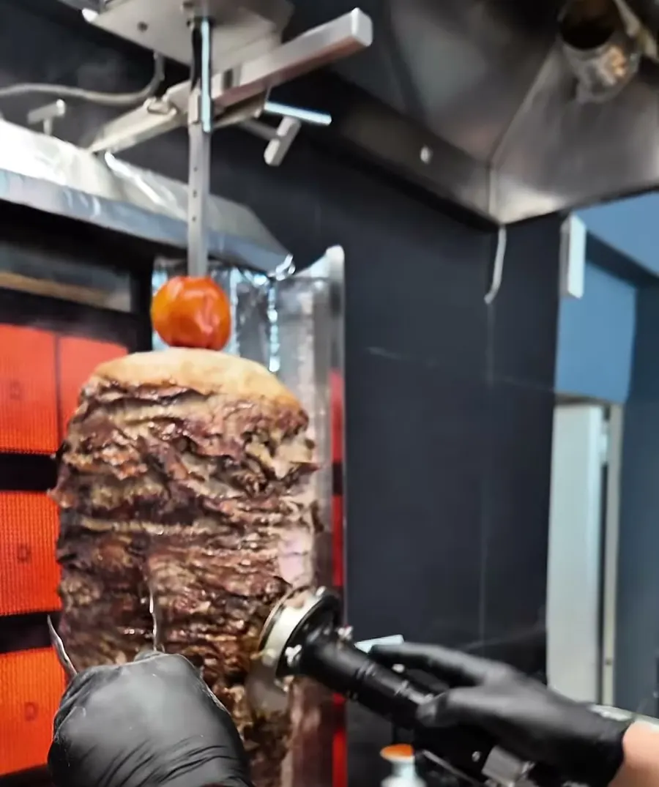
01
Richtiges Steakfleisch
Der Name ist Programm: Fleisch vom Steak-Spieß, dünn geschnitten und saftig. Wer lieber Hähnchen isst, bekommt jeden Döner auch damit.
Neu an der Bremer Straße in Osnabrück, direkt gegenüber von Penny. Döner mit Steak oder Hähnchen, frisch gebackenes Brot und Yufka, Pizza aus dem Ofen. Alles halal.
Drei Dinge, an denen man Steak Döner erkennt, und die man auch schmeckt.

Der Name ist Programm: Fleisch vom Steak-Spieß, dünn geschnitten und saftig. Wer lieber Hähnchen isst, bekommt jeden Döner auch damit.
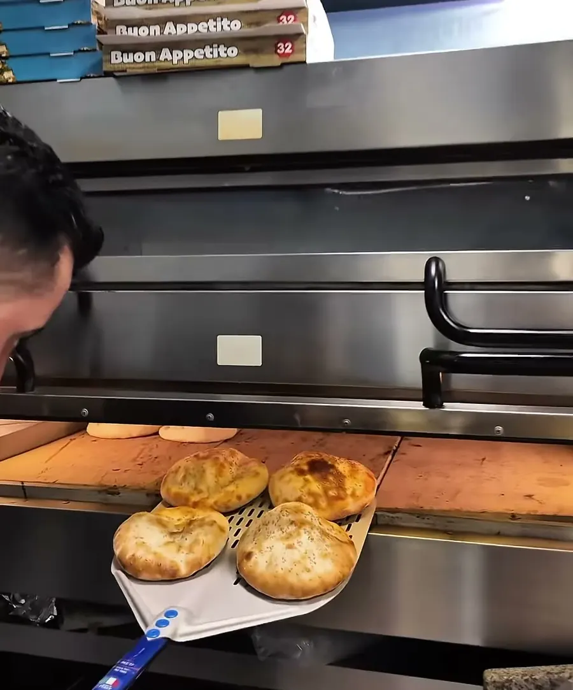
Kein Fladenbrot von der Stange. Das Dönerbrot wird hier gebacken, das Yufka für den Dürüm erst gemacht, wenn du bestellst.
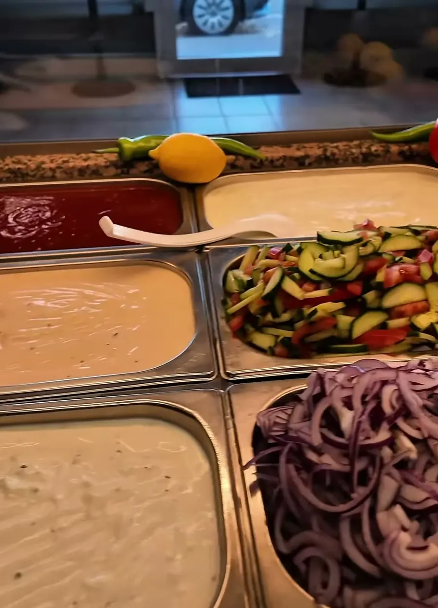
Die Soßen kommen aus der eigenen Küche, genau wie die Tomatensoße für die Pizza. Und auf dem Tisch stehen Chili und Sumach.
Beim Döner entscheidet das Brot. Deshalb backen wir es selbst, jeden Tag, direkt im Laden. Außen knusprig mit Sesam, innen weich genug, dass es alles zusammenhält.
Für den Dürüm wird das Yufka auf Bestellung frisch zubereitet und kommt noch warm in die Hand.
„Einer der wenigen, der sein Brot selber macht.“
aus dem Döner-Test von @umuditestet
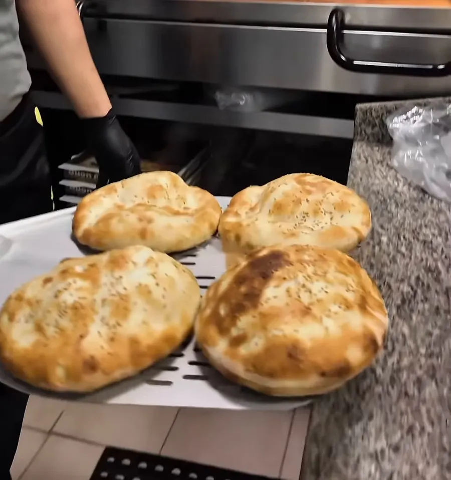
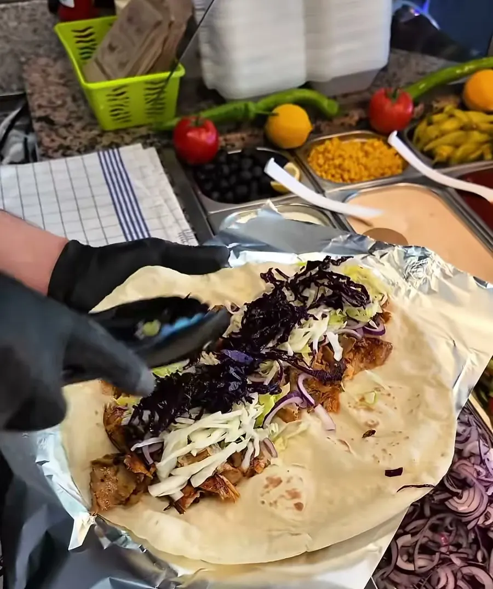
Döner gibt es mit Hähnchen oder Steak. Einfach umschalten, die Preise passen sich an.
Alle Gerichte sind halal. Preise laut Aushang im Laden und Wolt-Karte, Stand September 2026. Bei Lieferung über Wolt können die Preise abweichen. Allergene und Zusatzstoffe stehen auf der Karte im Laden.
Bei Wolt bestellen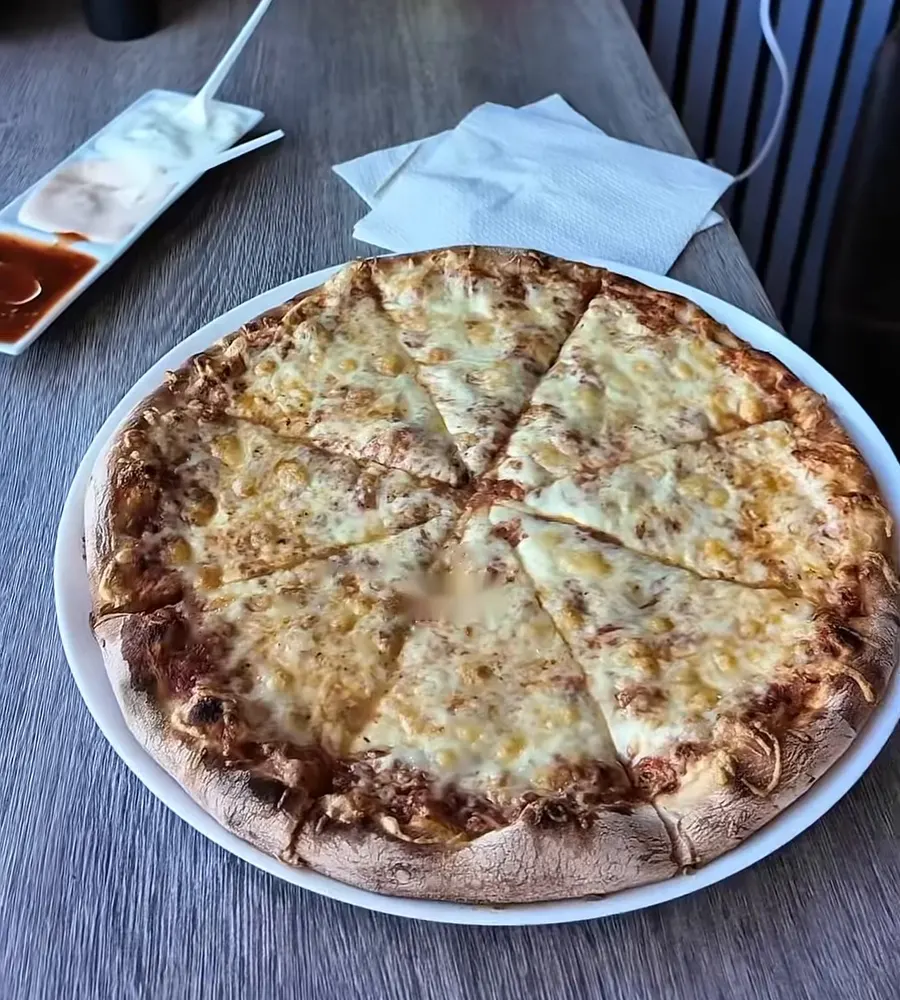
Der Teig wird von Hand ausgezogen, die Tomatensoße ist hausgemacht, belegt wird großzügig. Die Margherita ist der Beweis: Wer die gut kann, kann den Rest auch.
Hell, sauber und gemütlich: ein paar Tische und eine Theke am Fenster mit Blick auf die Bremer Straße. Oder du nimmst alles einfach mit.
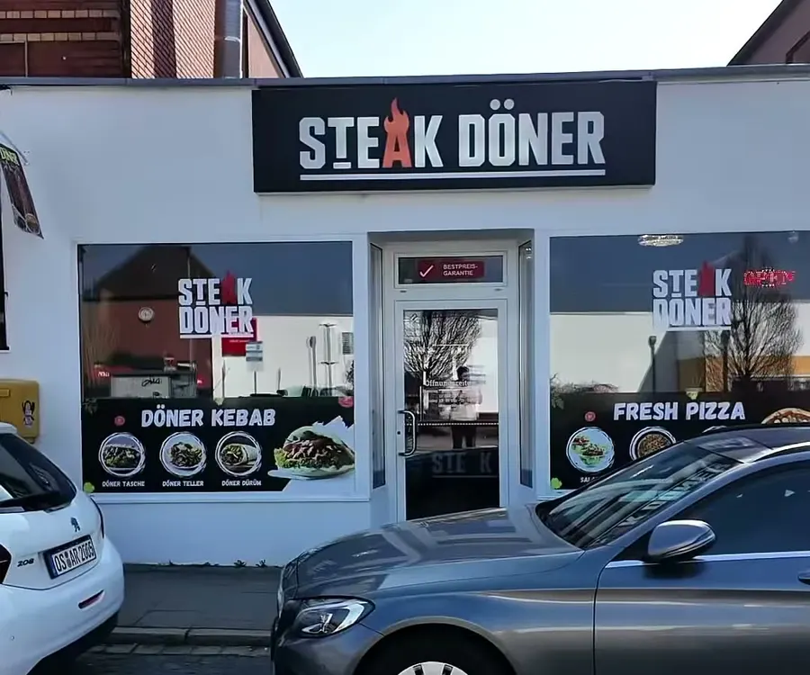
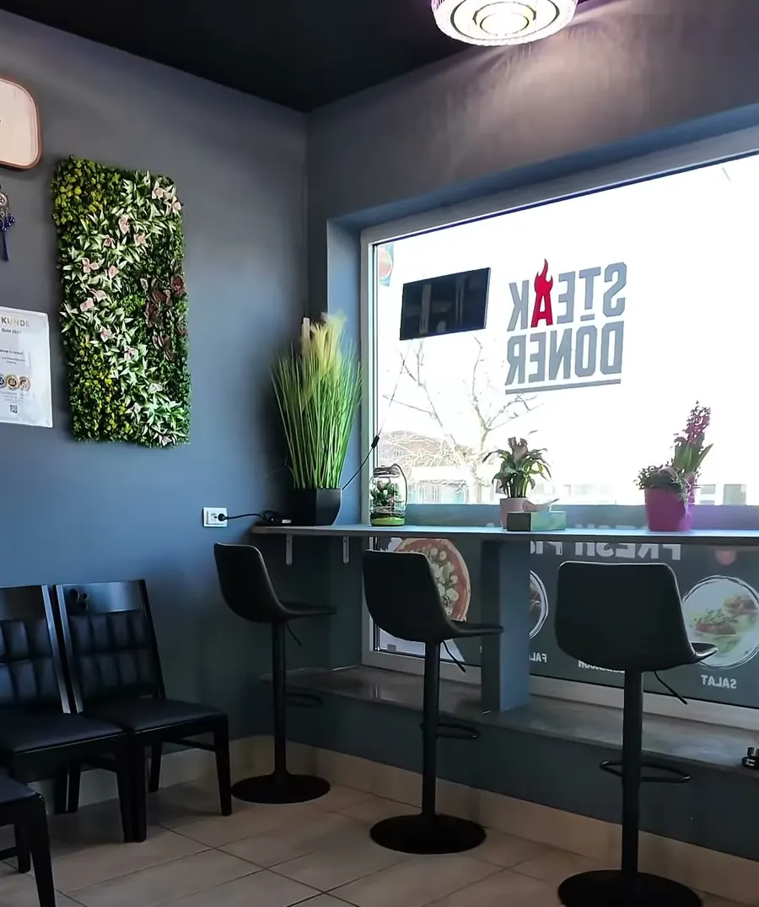
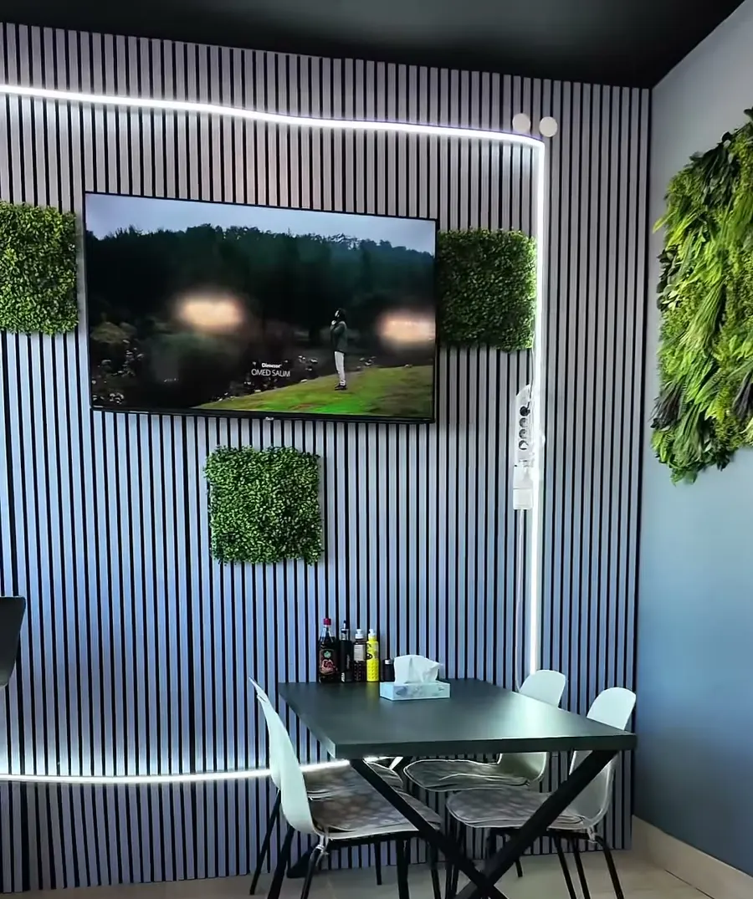
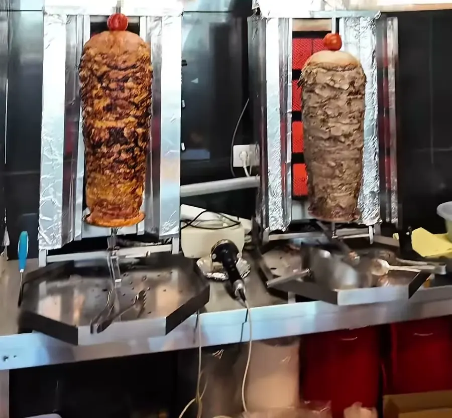
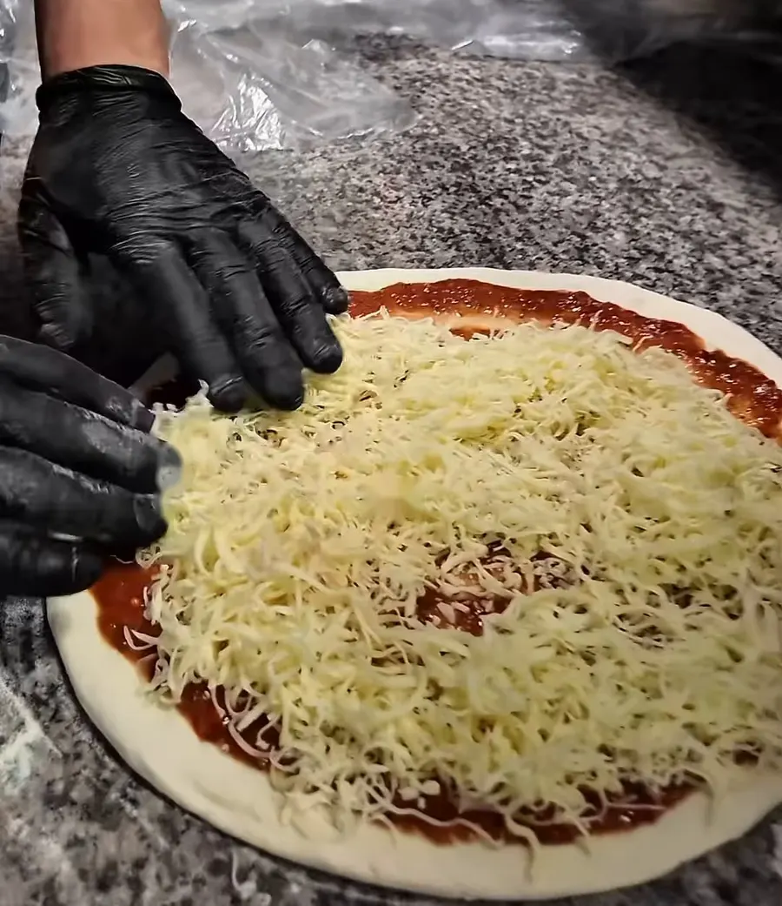
„Das Brot ist frisch gebacken und das Fleisch mega lecker und saftig.“
„Bin extra 15 Minuten Umweg für den Döner gefahren. Hat sich absolut gelohnt.“
„Sowohl Pizza als auch der Döner: überragend. Immer super höflich.“
| Montag | 13:00 – 22:00 |
| Dienstag | 11:00 – 22:00 |
| Mittwoch | 11:00 – 22:00 |
| Donnerstag | 11:00 – 22:00 |
| Freitag | 11:00 – 22:00 |
| Samstag | 11:00 – 22:00 |
| Sonntag | 13:00 – 22:00 |